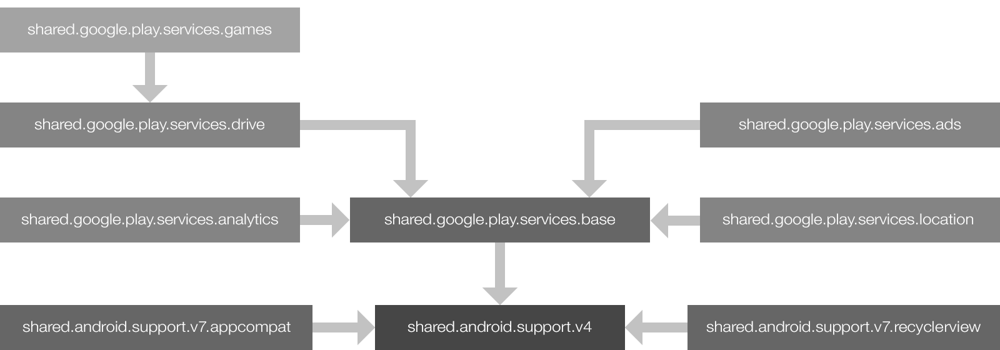

This guide explains how to properly integrate common Android libraries into your plugin project. Following these procedures ensures that your plugin works with the most
When Corona originally opened up the Corona Marketplace to accept content made by third parties, plugin developers could upload any .jar files needed to run their plugin. This resulted in plugins being submitted that would include versions of the Android Support Libraries or Google Play Services. The version of these .jar files would often be the latest version available when the plugin was initially developed, but they were not typically updated when newer versions of the plugin were released.
Essentially, with different versions of libraries floating around inside of plugins, incompatibilities would occur between a plugin needing, for instance, Google Play Services version 8.4 and another plugin needing Google Play Services version 4.2.
In Corona, dependency plugins are special plugins that address version incompatibilities between dependencies which multiple plugins may have. They contain all of the resources for the latest version of a particular library that Corona supports, plus any additional resources to aid in integration and proper usage of a library.
If your project depends on a common Android library like the Android Support Libraries or Google Play Services, you’ll need to include a dependency plugin to incorporate that library into your plugin submission. This is to ensure compatibility with other plugins that may be dependent on these libraries.
The following table outlines which libraries are supported by Corona as dependency plugins. While developing your plugin that meets the above criteria, you should test it against the library version encapsulated in a dependency plugin.
| Library | Dependency Plugin Name | Version |
|---|---|---|
| Android Support v4 | shared.android.support.v4 |
27.1.1 |
| Android Support v7 – AppCompat | shared.android.support.v7.appcompat |
27.1.1 |
| Android Support v7 – CardView | shared.android.support.v7.cardview |
27.1.1 |
| Android Support v7 – RecyclerView | shared.android.support.v7.recyclerview |
27.1.1 |
| Google Actions, Base Client Library | shared.google.play.services.base |
15.0.1 |
| Google Analytics | shared.google.play.services.analytics |
15.0.1 |
| Google Cloud Messaging | shared.google.play.services.gcm |
15.0.1 |
| Google Drive | shared.google.play.services.drive |
15.0.1 |
| Google Location | shared.google.play.services.location |
15.0.1 |
| Google Mobile Ads (AdMob) | shared.google.play.services.ads |
15.0.1 |
| Google Play Games Services | shared.google.play.services.games |
15.0.1 |
Any library with a dependency plugin name containing shared.android.support is part of Google’s Android Support Libraries. These dependency plugins encapsulate the respective components listed here and are analogous to adding the following to the dependencies block of your project’s build.gradle:
compile 'com.android.support:[COMPONENT_NAME]:[VERSION_NUMBER]'
Any library with a dependency plugin name containing shared.google.play.services is part of Google Play Services. These dependency plugins encapsulate the respective components listed here and are analogous to adding the following to the dependencies block of your project’s build.gradle:
compile 'com.google.android.gms:play-services-[COMPONENT_NAME]:[VERSION_NUMBER]'
The shared.google.play.services.base dependency plugin also includes a base logic layer that will check if the environment on the device is safe for using Google Play Services and attempt to resolve any issues with using the Google Play Services .apk. This is to follow Google’s guidelines on ensuring devices have the Google Play Services APK. Resolution attempts are made by presenting either an alert or a notification with context about the issue and how to resolve it. From an alert, the end user would then tap a button and be taken somewhere else on their device to resolve the problem. From a notification, tapping on it will launch the app and present an alert with similar context.
When the shared.google.play.services.base dependency plugin is included, your app’s main.lua will not begin to execute until any environment issues for using Google Play Services are resolved by the end user. Should an environment change affecting Google Play Services occur during your app’s execution, such as the end user disabling Google Play Services on their device, the end user will be presented with an alert or notification similar to when the app was initially launched, prior to main.lua executing.
If the end user just re-enabled Google Play Services and they still need to download an update to Google Play Services, your app will display an alert requesting the end user reboot their device. This reboot is strictly enforced if your app includes the "android.permission.RECEIVE_BOOT_COMPLETED" permission. In this case, your app won’t be able to get past this alert until the end user reboots the device. If the "android.permission.RECEIVE_BOOT_COMPLETED" permission is not requested by your app, it will recommend the user reboot their device, but will have no means of enforcing it. This reboot is recommended to get around potential
Note that the base logic layer does not account for issues that may occur while trying to connect to Google Play Services and use Google’s APIs. It will only guarantee that the app has access to the correct version of the Google Play Services .apk at all times. When it’s time for your plugin to connect to Google Play Services, be sure to follow the Accessing Google APIs and Runtime Permissions guides.
To use the base logic layer with a Solar2D Native project, you will need to identify which components of Google Play Services are being used with <meta-data><application> block of your application’s AndroidManifest.xml. These tags are used to identify components of Google Play Services that may need additional process. The format for these <meta-data>
<meta-data android:name="usesGooglePlayServicesComponent[PascalCase_NAME_OF_COMPONENT]" android:value="true" />
Here, [PascalCase_NAME_OF_COMPONENT] corresponds to the [COMPONENT_NAME] that would be specified in the dependencies block of your project’s build.gradle. For example, if the dependencies block of your build.gradle includes compile 'com.google.android.gms:play-services-ads:15.0.1'<application> block of AndroidManifest.xml:
<meta-data android:name="usesGooglePlayServicesComponentAds" android:value="true" />
To include a dependency plugin when submitting your plugin, add an entry to the coronaManifest → dependenciesandroid/metadata.lua:
local metadata =
{
plugin =
{
-- ...
},
coronaManifest = {
dependencies = {
["shared.google.play.services.ads"] = "com.coronalabs",
},
},
}
return metadata
The publisher ID for all of the dependency plugins is "com.coronalabs", so entries in the dependencies table should always be of the format ["DEPENDENCY_PLUGIN_NAME"] = "com.coronalabs",
Including one dependency plugin in the dependencies table will also include any dependencies it has. See the Dependency Plugin Chaining section for more information.
Need a common library that’s not currently supported? When submitting your plugin, please let us know about any common libraries you’re using that may need to be encapsulated as dependency plugins, for example other components of Google Play Services.
Most dependency plugins simply wrap the distribution of a library accessible from the Android SDK Manager. In these cases, simply including the correct version of the library in the dependencies block of the plugin’s build.gradle (Module: plugin)compile 'com.android.support:cardview-v7:27.1.1'dependencies block of the build.gradle (Module: plugin)
Other dependency plugins may require additional resources to test against. Any dependency plugin that falls in this category will have an entry in the tarball of plugins provided in the release files of Solar2D Native. For a dependency plugin with this requirement, be sure to:
Include the .jar file with the name of the dependency plugin. For example, the shared.google.play.services.base dependency plugin contains a shared.google.play.services.base.jar file which should be included in your project.
Merge the contents of the manifest table of metadata.lua into your project’s AndroidManifest.xml. The parts that need to be merged in should have a comment identifying them as part of the dependency plugin’s package name, for instance -- For share-google-play-services-base package-- From play-services-basement packagecompile 'com.google.android.gms:play-services-base:15.0.1'dependencies block of your build.gradle (Module: app)
Add any resources for the dependency plugin’s package into your project. If the dependency plugin contains multiple packages inside the resources folder, look for the package.txt file containing the dependency plugin’s package name and add the contents of the res folder to your project’s res folder.
Just as your plugin may rely upon a dependency plugin, a dependency plugin itself may depend upon other dependency plugins. The following flow chart illustrates the chaining between dependency plugins:

When using a dependency plugin, some permissions may be automatically added to your app. The following table illustrates which permissions are added for which dependency plugins.
| Dependency Plugin | Permissions |
|---|---|
google.play.services.ads |
"android.permission.ACCESS_NETWORK_STATE""android.permission.INTERNET" |
google.play.services.analytics |
"android.permission.ACCESS_NETWORK_STATE""android.permission.INTERNET""android.permission.WAKE_LOCK" |
google.play.services.gcm |
"com.google.android.c2dm.permission.RECEIVE""android.permission.INTERNET" |